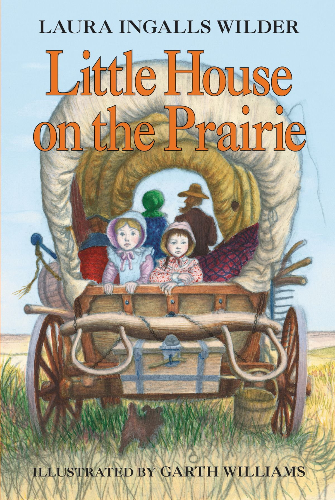
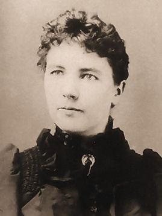

Thi Huyen Nguyen
Optimism is the faith that leads to achievement.

Seem to be very dry at first sight, but quite funny if you know me better!
Basic Info
| Birthday: | 05/09 |
| Gender: | Female |
| Favorite color: | Red |
| Favorite food: | Bacon |
| Pineapple on pizza: |
|
The Little House books
Notes: all information about the books are copied from wikipedia pages.

Basic Info
The "Little House" books is a series of American children's novels written by Laura Ingalls Wilder, based on her childhood and adolescence in the American Midwest (Wisconsin, Kansas, Minnesota, South Dakota, and Missouri) between 1870 and 1894.
List of books:
- Little House in the Big Woods (1932)
- Farmer Boy (1933)
- Little House on the Prairie (1935)
- On the Banks of Plum Creek (1937)
- By the Shores of Silver Lake (1939)
- The Long Winter (1940)
- Little Town on the Prairie (1941)
- These Happy Golden Years (1943)
- The First Four Years (1971)

A bit more about the author
Laura Elizabeth Ingalls Wilder (February 7, 1867 – February 10, 1957) was an American writer known for the Little House on the Prairie series of children's books, published between 1932 and 1943, which were based on her childhood in a settler and pioneer family.